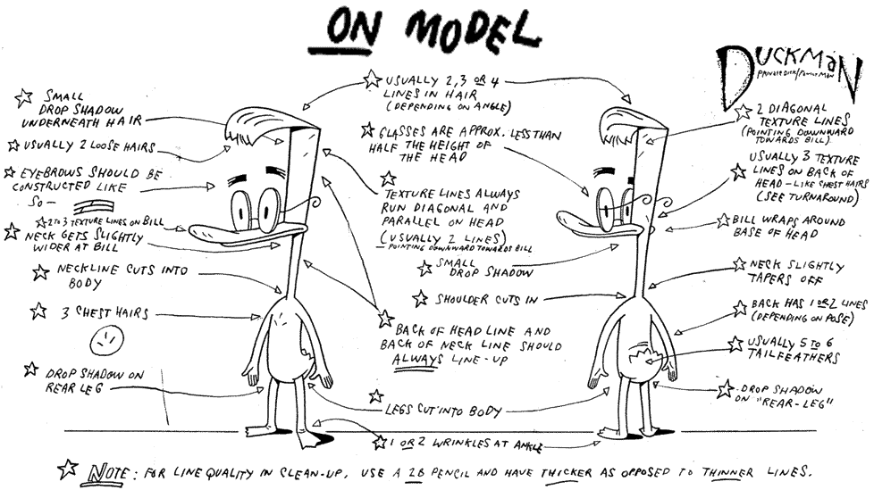
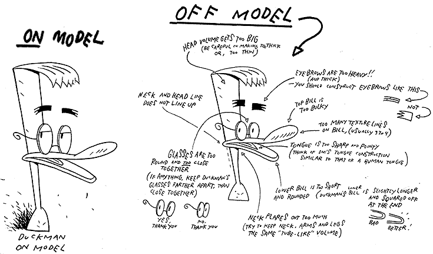
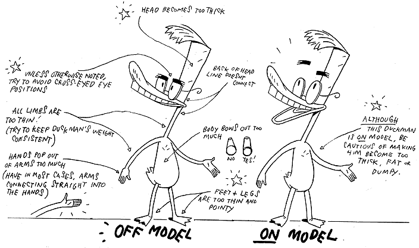

PART FIVE:
OFF MODEL/ON MODEL

In animating for television and movies, it is essential to give the animation artists as many details on how to successfully draw the characters as possible. Each show should be consistent with the last as far as how the characters look and move.
If there are differences in the characters appearance, even subtle ones, those characters are considered to be "off model".

As the old saying goes: Quality is in the little details. Notice how similar the "off model" portrait of Duckman is to the one to its left.
Only when the various errors are pointed out do you get an idea of how many there really are.

Being able to keep a character "on model" is difficult and requires practice, but it is the true difference between the professional animators and the novices.
Keeping a consistent look and feel to a character is not something every artist can do.